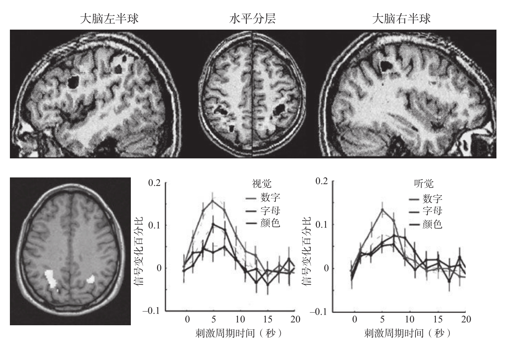

本书第8章详细描述了从1997年开始兴起的脑成像技术。当时我写道：“请拭目以待吧，因为在未来的10年里，关于大脑，这个使我们真正成为人的特殊器官的研究，将会取得更多激动人心的成果。”回顾过去，这些技术在20世纪90年代仍不成熟。实际上，过去15年里，最大的进步之一就是神经影像学研究的大爆发。fMRI已经成为主要的研究手段。它能提供极其细微水平的脑激活图，每一两秒就可以快速完成对活动中的大脑的扫描。因此，fMRI 20秒的数据相当于PET 3小时的数据。此外，由于fMRI的成像仅依赖血管中普遍存在的血红蛋白分子，因此不需要向被试注射异质药物。磁共振的灵敏性同样引人注目。举例来说，假如我们要检测一个被试运动皮层的激活情况，在任何一个试次中，我们都能够以95%的正确率指出被试按下了哪个反应键2。因此，包括上百个有关计算的脑机制研究在内的这类实验已经达到成千上万的数量，这一情况也不足为奇了。
所有实验都证明：位于左右顶叶的一个狭长的条状皮层区对数字加工有特殊的作用3。图10-2展示了这块脑区的精确位置。它位于大脑背侧的一个沟回深处，叫作顶内沟。我和同事们把它称为“hIPS”（horizontal part of the intraparietal sulcus），也就是“顶内沟的水平部分”。在我们所有的实验中，如果被试只注意数字，就能扫描到这个区域的激活。比如，要求一个人从13开始，依次根据屏幕上呈现的单个数字进行减法运算4，这样的心算能够很好地激活这个部位，但事实上并不需要那么复杂的计算。呈现给被试一串字母、颜色或者数字，只是要求他去搜索特定的目标（如字母A、红色或数字1）即可。一旦数字出现5，hIPS部位就会激活，但如果刺激是一个字母或是一种颜色，它不会有任何反应。因此，这一部位和数感密切相关，似乎在不激活这个脑区的情况下我们不可能想到一个数字。

第一行是人脑的不同扫描层。水平分层图中，两侧的黑色部位属于hIPS（顶内沟的水平部分）。这个位置在许多算术任务中都会被激活，包括数字比较、加法、减法或估算。下半部分结果表明，找出某个数字的任务就足以激活这个部位，如曲线所示，无论数字是由视觉还是听觉方式呈现，其激活强度都大于字母或颜色。
图10-2 数感在顶叶的定位
资料来源：改编自Dehaene Piazza et al., 2003; Eger et al., 2003。
许多证据显示，这个脑区与数量，而不是与数字的其他方面密切相关。它能对数量表征的所有形态做出反应。无论是像之前看到的点阵，还是一个符号，如阿拉伯数字3、手写的或口语中的“三”。这个非常简单的标准促使神经科学家将hIPS定义为“多模态”或“非模态”皮层区，这些脑区不同于感知觉区，它们不像视觉或触觉区那样联结某种特殊的感知觉，而是位于许多输入通路的交汇点。如果某个脑区负责编码一个抽象的概念，它就不会联结特殊的感知觉。关键是，无论与此概念相关的刺激以什么形态呈现，它都能发生反应。
实际上，另一个准则也证实了hIPS仅涉及数字概念：它的激活状态不会因为数字的呈现方式而改变，即无所谓是口头表达还是书写，它只是根据数字的大小或是它们之间距离的远近而变化。以数字比较任务为例。你需要判断目标数字（如59）比给定的参照数（如65）大还是小。正如我在第3章所说明的，我们在这个任务中的反应完全受制于数量间距离的大小。当数量之间的距离更大时，我们会反应更快，例如比较19和65的速度，会快于距离较小的59和65。值得注意的是，hIPS部位呈现了相同的距离效应。它的激活程度会因数字之间的距离变化而变化。
当数字间的距离较大，容易比较时，激活程度就弱，随着距离缩小激活程度逐渐增大6。即使所呈现的数字是复杂的书面词，如“四十七”和“六十一”，hIPS部位仍然以数字距离进行编码。这个区域并不关心刺激输入形式的特殊性，只关注数量的概念。
1999年，我和同事们在《科学》杂志上发表了一篇文章，文章有力地证明了顶叶对数量表征的关注7。我们从本书中描述的一个简单观点出发：一些计算需要具体考虑数量，而另一些则只需要关于算术事实的机械记忆。例如，大部分人的头脑里都存有“乘法口诀表”，然而我们必须通过计算才能得出两位数减法的答案，因为我们大脑中没有这些答案。甚至同一个计算过程，我们也可以采用两种方法。比如加法，人们可以从言语记忆中提取答案，也可以通过操纵数量计算出结果。举个例子，面对“15+24=99”这个等式，在通过精确计算或调用言语记忆中的算术事实，从而确定正确答案是39还是49之前，你的数感会使你意识到等式错了。由此，我们得出了一个简单的预期：当要求被试完成精确加法时，与需要努力的序列任务和言语记忆有关的脑区会被激活，但假如只要求被试估算结果，那么在编码数量的双侧顶叶区，即hIPS部位，我们将观察到更强的激活。当我们用fMRI、事件相关电位对大脑激活情况进行监测时，我们得到的结果和这个简单的预期基本一致。在加法的精算中，让被试从两个非常接近的选项中选出正确答案，例如“4+5=7”或“4+5=9”，我们会发现，在与语言加工相关联的左侧脑区会出现更强的激活；然而在估算时，如果两个选项都不是正确答案，但有一个更接近，例如“4+5”的答案接近8还是接近3，这种情况下，我们的关注点hIPS区域激活更加显著。
诚然，这种区别只表现在激活程度上。在我们计算时，两个脑区会进行系统化的合作，只是hIPS在数量加工过程中表现得更突出。训练尤其能够改变脑区间的平衡。在我们第一次要求被试进行像“23+29”这样的复杂加法运算时，hIPS的激活最强。随着不断地训练，大脑存储的算术事实越来越丰富，hIPS的激活程度下降，大脑左半球涉及语言加工的区域，特别是被称为角回的脑区激活增强8。总而言之，这些结果和数字系统的两个概念相吻合：对数量的核心表征与两侧顶内脑区相关联，在不同的文化和教育的影响下都系统地存在；大脑左半球的回路涉及存储和提取算术事实时所使用的语言和与教育相关的策略。
hIPS和大脑左半球言语区之间存在着高效的交互作用，每当我们看到一个阿拉伯数字或一个大写的数字，我们的大脑都能迅速地将它转换到顶叶进行数量编码。这个转换甚至能够在无意识的条件下发生9。第3章中，我描述了认知心理学家设计的一个巧妙的让单词不可见的方法，即将单词夹在随机的字符串或是#号的掩蔽刺激之中。通过这个方法，在不被被试发觉的情况下，数字可以在屏幕上闪现长达1/20秒的时间，被试只看得见闪过的字符。即便如此，人的大脑还是清晰地记录了被掩蔽的数字，计算出了它的意义，并把它表征在hIPS上。更令人惊奇的是，如果问被试，紧随看不见的数字出现的另一个可见的数字是大于5还是小于5，脑成像显示，被掩蔽的数字会对这个任务的反应造成影响。虽然被试不知道这个数字是多少，但他的大脑却知道它是大于5还是小于5！甚至运动皮层做出的反应也与被试对不可见的那个数字进行判断时的反应相似。
然而，一个基本问题是，是否hIPS区域中的所有部分都确实负责数字加工？是否就像布赖恩·巴特沃思提出的，hIPS区域是一个特定的，其中的神经元只涉及数字的“数字模块”10？有时候，大脑的整块皮层区只负责一个非常精细而重要的功能，比如面孔识别11。然而，对于数字来说，这个答案更加复杂。hIPS中的神经回路是专门处理数字的，但是又与负责处理物品大小或位置的神经元交织在一起12。我们必须面对这个复杂的事实：人类大脑既不是一张“白纸”，也不是一个高度特异化的、区分明确、排列整齐的模块。
许多实验证明了hIPS确实不是一个通用区域，它并不会在思考复杂概念或进行任何比较操作时都被激活。比利时的心理学家马克·蒂乌（Marc Thioux）证实了这一观点13。他运用了一个精巧的设计：在被试进行数字比较和分类任务时，扫描他们的脑部活动。比如，在一个比较任务中，被试要将所呈现的每个动物与狗做凶猛程度的比较，然后将这个结果与对每个数字与5的大小进行比较的结果进行对比。在分类任务中，被试被要求判断一个数字的奇偶性，或者判断一个动物是否属于哺乳动物。最后一个任务中，他们只需要判断单词是大写的还是小写的。在所有实验中，只要人们看到数字，hIPS就会被激活，而看到动物名称时hIPS不会被激活。证据表明，这个脑区会被数量这个抽象的概念激活，而不会被同样抽象的凶猛这个概念激活。此外，这个结论和针对脑损伤患者的实验结果完全吻合，这些结果显示，动物的知识与算术的知识能够通过脑损伤完全分离14。阿尔兹海默病患者有严重的精神错乱，他们不能区分狗和长颈鹿的概念，却非常擅长数字。相反，失算症患者常常是由于hIPS部位或靠近hIPS的部位受损，失去了所有对数字的认识，但是他们对其他类别单词的理解是正常的。因此，毫无疑问，大脑把数字看作特殊的知识种类，它需要位于顶叶区域的神经装置。